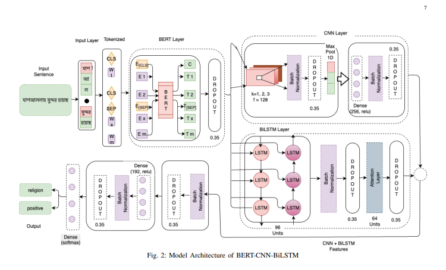
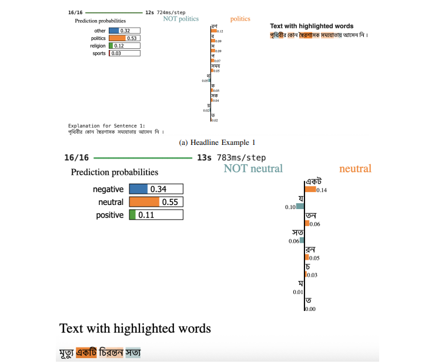
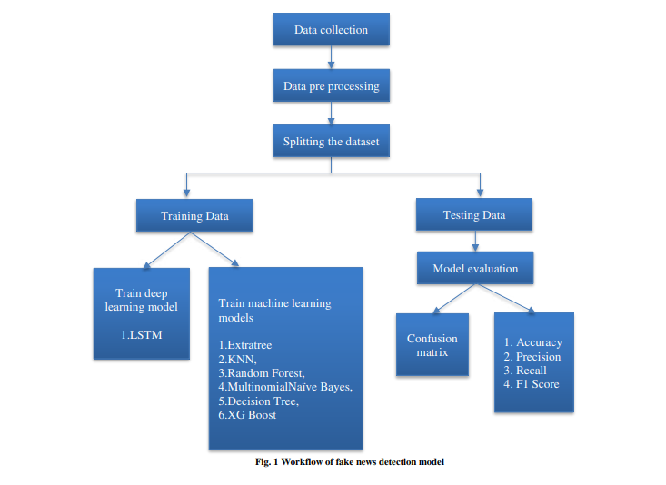
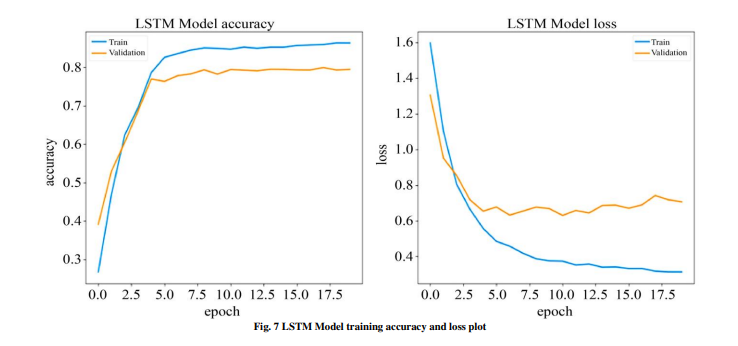
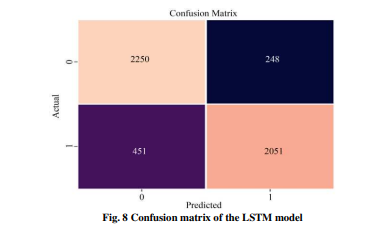

Abstract: In our daily lives, newspapers are an essential information source that impacts how the public talks about present-day issues. However, effectively navigating the vast amount of news content from different newspapers and online news portals can be challenging. Newspaper headlines with sentiment analysis tell us what the news is about (e.g., politics, sports) and how the news makes us feel (positive, negative, neutral). This helps us quickly understand the emotional tone of the news. This research presents a state-of-the-art approach to Bangla news headline classification combined with sentiment analysis applying Natural Language Processing (NLP) techniques, particularly the hybrid transfer learning model BERT-CNN-BiLSTM. We have explored a dataset called BAN-ABSA of 9014 news headlines, which is the first time that has been experimented with simultaneously in the headline and sentiment categorization in Bengali newspapers. Over this imbalanced dataset, we applied two experimental strategies: technique-1, where undersampling and oversampling are applied before splitting, and technique-2, where undersampling and oversampling are applied after splitting on the In technique-1 oversampling provided the strongest performance, both headline and sentiment, that is 78.57% and 73.43% respectively, while technique-2 delivered the highest result when trained directly on the original imbalanced dataset, both headline and sentiment, that is 81.37% and 64.46% respectively. The proposed model BERT-CNN-BiLSTM significantly outperforms all baseline models in classification tasks, and achieves new state-of-the-art results for Bangla news headline classification and sentiment analysis. These results demonstrate the importance of leveraging both the headline and sentiment datasets, and provide a strong baseline for Bangla text classification in low-resource.



Abstract: In this current world, media and online news publications are spreading rapidly. The dissemination of inaccurate information on social media platforms is increasingly becoming a concern. The proliferation of fake news is due to the ease with which data can be accessed and shared as a result of the mobile technology revolution. Like many countries, fake news is spreading very fast in Bangladesh. The situation gets worse with the spreading of misinformation about epidemics like COVID-19. Created a novel dataset of the Bengali language and achieved to goal by using LSTM and machine learning models. Now, other algorithms are used, but the LSTM and machine learning models have good performance. This program's algorithm to select the attribute, a text feature based on TF-IDF and Word Embedding was used. Focused LSTM-base model and machine learning models, especially the Bangla-LSTM-base model and machine learning models. Finally, add a dense layer as a summary layer responsible for generating summary sentences to text. According to all of the evaluations performed above, the additional Trees Classifier outperformed the other six Machine Learning methods. The accuracy rate for identifying false news in news headline data is roughly 86.14%. The second-best accuracy provided by the Random Forest Classifier algorithm is close to 85%. The third-best accuracy provided by the Decision Tree Classifier method is approximately 84%. Moreover, seeing that deep learning algorithms outperformed machine learning ones. Furthermore, LSTM has a 96.14% training accuracy rate and an 86% testing accuracy rate for identifying false news in news headline data.